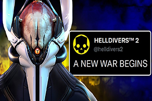
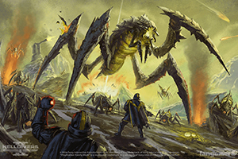

Helldivers 2 has continued to evolve since its release, offering players intense cooperative battles against increasingly formidable enemies. With the latest update, a brand-new enemy race has emerged, alongside a range of powerful upgrades that enhance combat effectiveness. But what does this mean for the Helldivers? Let’s dive into the latest changes and how they impact the fight for democracy.

The introduction of a new alien race brings fresh challenges to the battlefield, requiring new tactics and strategies. Alongside this, upgraded weapons, stratagems, and armour modifications provide players with more tools to combat the growing threats. Whether you’re a veteran Helldiver or a new recruit, these updates are sure to shake up the battlefield.
The latest enemy faction to join the war is the Automatons, a ruthless robotic force bent on exterminating humanity. Unlike the insectoid Terminids, the Automatons rely on advanced weaponry, impenetrable defences, and coordinated assaults. Their mechanical nature makes them resistant to biological warfare, forcing players to adapt their loadouts and tactics.
One of the most significant additions with this update is the Automaton Dreadnought, a towering war machine equipped with devastating artillery and an impenetrable energy shield. Standard weapons barely scratch its armour, making it one of the toughest enemies Helldivers have faced yet. Coordinated team efforts, heavy explosives, and strategic positioning are essential for taking down these mechanical titans.
To counter the rising threat, the Helldivers have received several new upgrades. Among the most anticipated is the Tesla Rifle, a high-voltage energy weapon capable of chaining electricity between enemies. This makes it highly effective against tightly packed squads of Automatons, stunning and damaging multiple foes at once.
In addition to new weaponry, a range of armour modifications has been introduced, offering passive benefits tailored to different playstyles. The Juggernaut Armour provides increased resistance to explosive damage, making it ideal for players who find themselves in the middle of chaotic battlefield skirmishes.
The Orbital Rail Cannon Stratagem has also been added, delivering a high-powered energy blast from orbit to annihilate heavily armoured targets. This new stratagem is particularly effective against Automaton fortifications and Dreadnoughts, allowing players to break through enemy lines with overwhelming firepower.

For those who prefer a more tactical approach, the EMP Drone provides battlefield control by disabling enemy machinery within a wide radius, leaving Automatons vulnerable to follow-up attacks.
Alongside the new race and upgrades, quality-of-life improvements have been introduced, including enhanced squad communication tools, better hit detection, and optimised matchmaking. These changes help streamline the cooperative experience, ensuring smoother missions and better coordination among players.
The community response to these updates has been overwhelmingly positive, with many players praising the increased challenge and variety in combat encounters. The Automatons bring a distinct playstyle compared to previous enemies, making battles feel fresh and unpredictable.
As Helldivers 2 continues to expand, the battlefield only grows more intense. With new enemies, weapons, and stratagems at their disposal, players must adapt and overcome to secure victory. Whether facing off against the Automatons’ relentless onslaught or experimenting with the latest high-tech weaponry, one thing is clear—democracy must be defended at all costs.
Will you answer the call and take the fight to the Automatons? Gather your squad, gear up with the latest upgrades, and prepare to dive once more into the chaos of Helldivers 2!